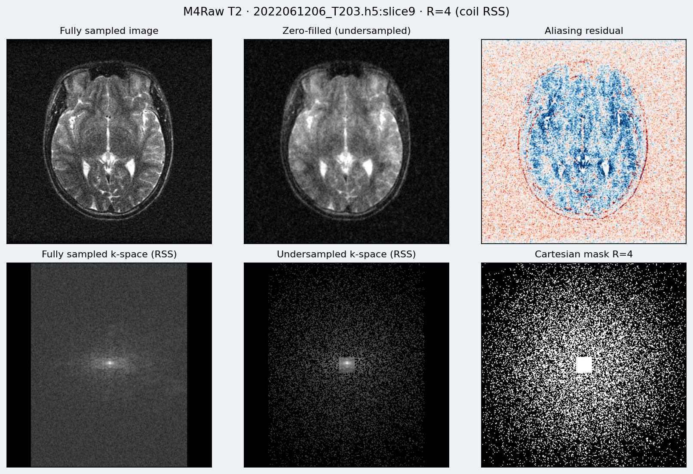
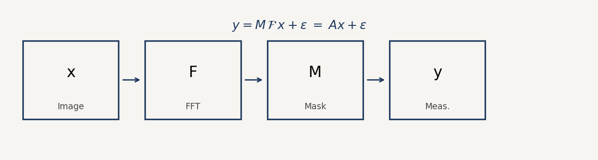
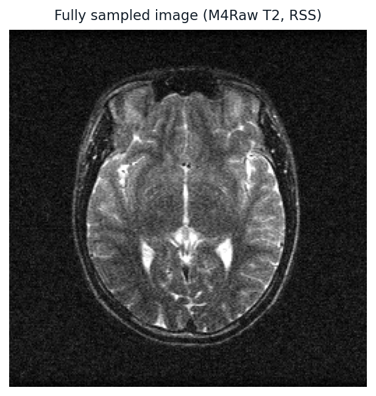
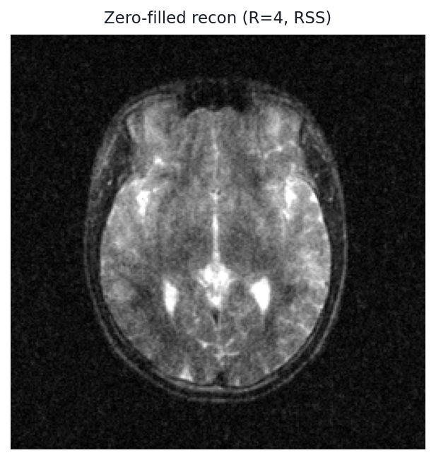
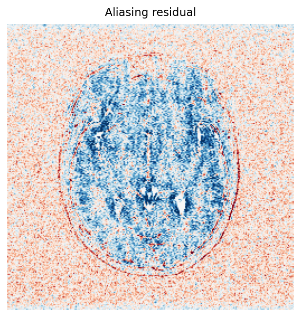
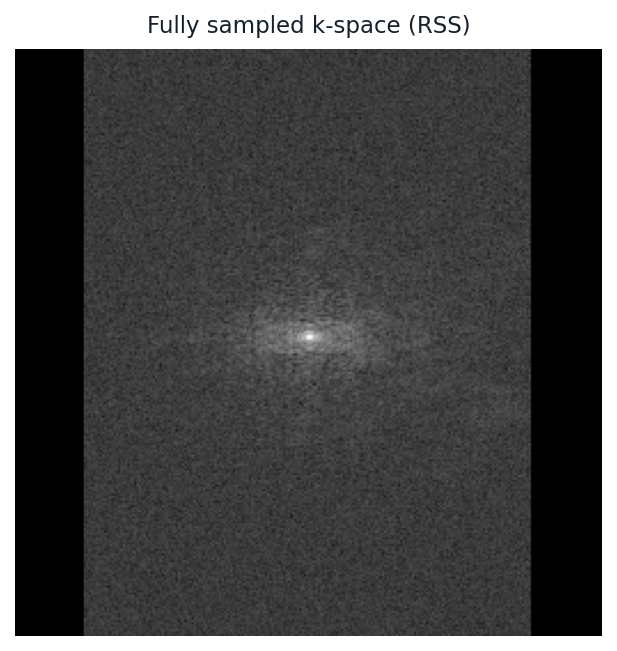
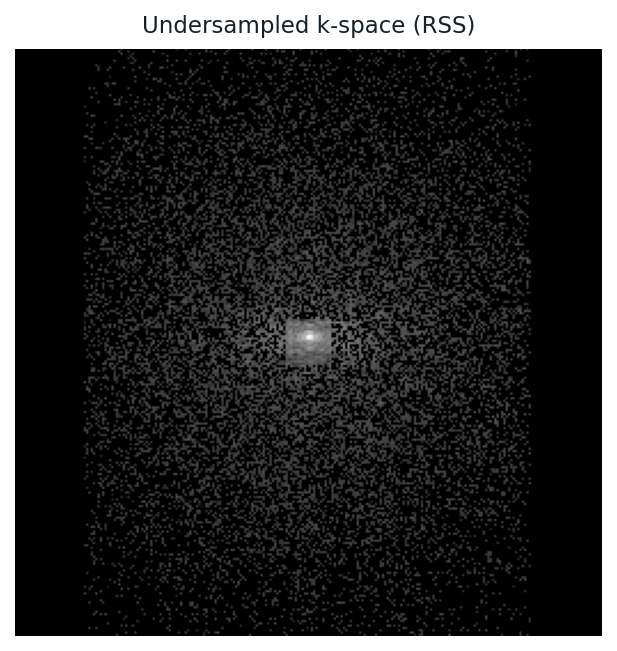
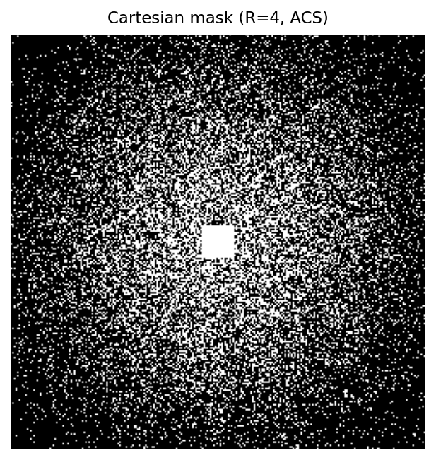
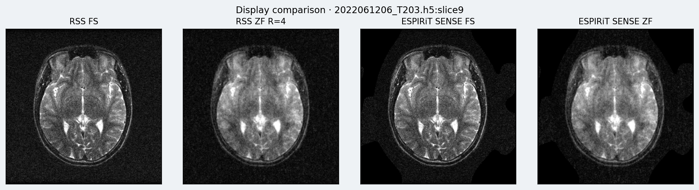

Research notes · Inverse problems · Generative imaging
A detailed walkthrough of the research path from multi-step diffusion and adversarial baselines, through physics-based unrolled networks, to residual-space drifting models aimed at single-step inference with diffusion-like generative fidelity — and the ongoing effort to fuse unrolled architectures with the drift paradigm.
MRI acquisition is fundamentally limited by the need to traverse $k$-space. Accelerating scans by skipping phase-encode lines yields undersampled measurements $y$ and an ill-posed recovery problem for the complex image $x$. Classical compressed-sensing methods rely on handcrafted sparsity; deep learning replaces those priors with data-driven ones.
Within deep MRI reconstruction, two families dominate practice:
The research program documented here is an attempt to keep the generative quality of diffusion while approaching the latency of a single network evaluation — using residual-driven drifting (RDDM / DriftRAM), and subsequently asking whether unrolled physics modules should sit inside that generative loop.

In multicoil MRI with coil sensitivity maps $S_c$ and a binary (or soft) sampling mask $M$, the linear forward operator $A$ maps a complex image $x \in \mathbb{C}^{H\times W}$ to undersampled multi-coil $k$-space:
$$ y = A x + \varepsilon, \qquad (A x)_c = M\,\mathcal{F}\,(S_c \odot x), \quad c = 1,\ldots,C. $$Here $\mathcal{F}$ is the (centered, orthonormal) 2D Fourier transform, $\odot$ is pointwise multiplication, and $\varepsilon$ models thermal / acquisition noise. The adjoint $A^H$ (often written $A^\top$ when working with real/imag stacked channels) produces the coil-combined zero-filled image $x_{\mathrm{us}} = A^H y$.








For a linear operator with a (generalized) left inverse built from $A^H$, any candidate reconstruction can be split into a data-consistent part and a null-space part:
$$ x = A^\dagger y + (I - A^\dagger A)\, x \;=\; x_{\mathrm{us}} + P_{\mathcal{N}(A)}\, x, $$where $P_{\mathcal{N}(A)} = I - A^\dagger A$ projects onto the null space of $A$ (in practice often $I - A^H A$ after appropriate normalization / soft projections). Measured Fourier coefficients fix the range component; everything the network “hallucinates” to remove aliasing must live in $\mathcal{N}(A)$ if hard data consistency is required.
Design consequence. Generative MRI methods that predict a residual in null space — $x_{\mathrm{recon}} = x_{\mathrm{us}} + P_{\mathcal{N}(A)}\, G(\cdot)$ — automatically preserve acquired $k$-space lines while still allowing rich texture synthesis. This is the structural prior used in DriftRAM.
The standard regularized least-squares problem is
$$ \hat{x} = \arg\min_{x} \frac{1}{2}\|Ax - y\|_2^2 + \lambda\,\mathcal{R}(x). $$Handcrafted $\mathcal{R}$ (TV, wavelets) gave way to learned denoisers / proximal maps plugged into iterative schemes (PnP, RED, ADMM, proximal gradient). Unrolled networks freeze a small number of such iterations and train end-to-end.
From a Bayesian perspective we want samples (or a point estimate) from the posterior
$$ p(x\mid y) \propto p(y\mid x)\, p(x), $$with Gaussian likelihood $p(y\mid x) = \mathcal{N}(y; Ax, \sigma^2 I)$ and a prior $p(x)$ over natural MR images. Generative models approximate $p(x)$ (or a residual distribution) and either:
Pixelwise $\ell_1/\ell_2$ regression toward $x_{\mathrm{fs}}$ estimates the posterior mean under common assumptions — which is PSNR-friendly but suppresses high-frequency texture (regression to the mean). Adversarial and diffusion objectives target richer distributional match, which is why they look more “MRI-like” even at similar PSNR.
A DDPM defines a fixed forward noising process that gradually destroys an image $x_0$:
$$ q(x_t\mid x_{t-1}) = \mathcal{N}\!\big(x_t; \sqrt{1-\beta_t}\, x_{t-1},\, \beta_t I\big), $$with schedule $\{\beta_t\}_{t=1}^{T}$. The marginal is $q(x_t\mid x_0) = \mathcal{N}(x_t; \sqrt{\bar\alpha_t}\, x_0,\, (1-\bar\alpha_t)I)$ where $\alpha_t = 1-\beta_t$ and $\bar\alpha_t = \prod_{s\le t}\alpha_s$. A neural network $\epsilon_\theta(x_t, t)$ (or an $x_0$-prediction network) is trained to reverse the process:
$$ \mathcal{L}_{\mathrm{simple}} = \mathbb{E}_{t,x_0,\epsilon} \big\| \epsilon - \epsilon_\theta\big(\sqrt{\bar\alpha_t}\, x_0 + \sqrt{1-\bar\alpha_t}\,\epsilon,\, t\big) \big\|_2^2. $$Sampling starts from $x_T \sim \mathcal{N}(0,I)$ and iteratively applies the learned reverse transitions — typically hundreds of network evaluations. For MRI, the codebase Models/DDPM_xstart_multicoil and the M4Raw fine-tuning scripts under m4_cm/ use an $x_0$-prediction parameterization on complex / multicoil data, with inference-time adaptations for FastMRI / M4Raw masks.
Cost. Multi-step reverse diffusion is the main clinical blocker. Even with DDIM / consistency distillation, bridging to a single NFE (number of function evaluations) without collapsing fine structure is hard — which motivates residual drifting rather than naive regression distillation alone.
Conditional GANs learn a generator $G$ and discriminator $D$ for paired data $(x_{\mathrm{us}}, x_{\mathrm{fs}})$. A common MRI instantiation (pix2pix / residual GAN) minimizes a mix of adversarial and reconstruction losses:
$$ \mathcal{L}_{G} = \mathbb{E}\big[-\log D(x_{\mathrm{us}}, G(x_{\mathrm{us}}))\big] + \lambda_{\ell_1}\, \|G(x_{\mathrm{us}}) - x_{\mathrm{fs}}\|_1 + \lambda_{\mathrm{perc}}\, \mathcal{L}_{\mathrm{VGG}}\big(G(x_{\mathrm{us}}), x_{\mathrm{fs}}\big). $$The discriminator distinguishes real pairs $(x_{\mathrm{us}}, x_{\mathrm{fs}})$ from fake pairs $(x_{\mathrm{us}}, G(x_{\mathrm{us}}))$. Residual formulations often predict an additive correction on top of $x_{\mathrm{us}}$, which is natural for aliasing removal.
In this project, Models/rGAN provides the pix2pix / CycleGAN-family training stack, extended with M4Raw caching (m4raw_cache), FastMRI-style masks, and optional VGG perceptual losses — used as a fast generative baseline that already runs in one forward pass.
| Aspect | Observation |
|---|---|
| Latency | Single NFE — clinically attractive. |
| Texture | Can look sharp, but may invent adversarial high-frequency artifacts. |
| Training | Unstable; sensitive to $\lambda_{\ell_1}$, perceptual weights, and mask distribution. |
| Consistency | Not automatically data-consistent unless an explicit DC projection is added. |
| Role here | Lower bound on what “one-step generative” can look like before drift training. |
After generative baselines, the next question was: how good are dedicated physics-based reconstructors when we do not ask them to be generative? Two architectures were trained / evaluated as representatives of the unrolled / proximal family.
MoDL (Aggarwal et al., 2018) unrolls alternating denoising and conjugate-gradient data-consistency steps. With a CNN denoiser $\mathcal{D}_\theta$ shared across $K$ cascades, each iteration solves
$$ z^{(k)} = \mathcal{D}_\theta\!\big(x^{(k)}\big), \qquad x^{(k+1)} = \arg\min_{x} \|Ax - y\|_2^2 + \lambda\,\|x - z^{(k)}\|_2^2. $$The quadratic subproblem is solved with CG using the normal equations
$$ \big(A^H A + \lambda I\big)\, x = A^H y + \lambda\, z^{(k)}. $$In Models/MoDL_PyTorch, the CNN residual denoiser operates on real/imag channels, coil sensitivities and masks enter myAtA, and $K\in\{1,10\}$ configs mirror the original paper’s warm-start practice (train $K\!=\!1$, then $K\!=\!10$). M4Raw-specific FFT conventions (centered orthonormal) were aligned with the rest of the pipeline.
Takeaway from MoDL. Explicit CG data consistency yields excellent numerical fidelity to acquired lines and competitive PSNR/SSIM. With pixel losses, reconstructions remain somewhat smooth — confirming the familiar “unrolled = accurate but less generative” regime.
RAM (Terris et al., 2025) is a non-iterative foundational model for computational imaging: a proximal estimation module, Krylov subspace module (KSM) injecting physics via learned combinations of gradient / adjoint terms, multiscale operator conditioning, and noise conditioning. Unlike MoDL’s deep unrolling of many CG steps, RAM aims for a single powerful physics-aware forward pass that still queries $A$ and $A^H$ inside the network.
In this project, Models/ram was used both as a standalone MRI reconstructor (M4Raw training / evaluation scripts) and later as architectural DNA for generative variants (GenRAM backbone ideas inside early DriftRAM designs before the DiT-B swap).
| Method | Typical NFE | Physics / DC | Generative texture | Role in this work |
|---|---|---|---|---|
| DDPM ($x_0$-pred.) | $\sim\!10^2$ | Optional at sample time | High | Fidelity ceiling |
| rGAN | $1$ | Weak / optional | Medium–high (artifact risk) | One-step generative baseline |
| MoDL ($K$ cascades) | $K$ denoise + CG | Strong (CG) | Low–medium | Physics baseline |
| RAM | $1$ (with $A,A^H$ calls) | Strong (KSM / proximal) | Low–medium | Non-iterative physics baseline |
| DriftRAM | $1$ | Null-space residual | Target: DDPM-like | Current generative one-step approach |
| Unrolled + Drift | Few | CG / KSM + drift | Target: DDPM-like | Work in progress |
The research hypothesis: residual-space drifting can move a one-step generator’s output distribution toward the real residual distribution during training, so inference stays single-shot while matching multi-step diffusion fidelity more closely than $\ell_1$ or GAN alone.
RDDM (Wang, Lyu, Wang — residual-driven drifting for LDCT) reframes generation around residuals. Let $r^{+}$ denote real residuals (e.g. clean − noisy in CT, or fully sampled − undersampled components in MRI) and $r^{g}$ the residuals currently produced by the generator. Instead of only regressing $r^{g}\!\to\! r^{+}$ pixelwise, RDDM constructs a drifting field in residual feature space that points generated samples toward the real residual cloud, using other batch samples as negatives.
Flatten each residual map in a batch into features and $\ell_2$-normalize / rescale them. For temperature $\tau > 0$, build an affinity kernel between generated features $g_i$ and the concatenated negative/positive bank $z_j$:
$$ K_{ij} = \exp\!\big(-\|g_i - z_j\|_2 / \tau\big), \qquad \tilde K_{ij} = \frac{K_{ij}}{\sqrt{\big(\sum_{j'} K_{ij'}\big)\big(\sum_{i'} K_{i'j}\big)}}. $$Split $\tilde K$ into negative and positive blocks. The drift for generated sample $i$ is a difference of kernel-weighted residual vectors:
$$ d_i = \underbrace{\big(\tilde K^{+}_{i\cdot}\, \mathbf{1}^\top \tilde K^{-}_{i\cdot}\big)\, R^{+}}_{\text{pull to real residuals}} - \underbrace{\big(\tilde K^{-}_{i\cdot}\, \mathbf{1}^\top \tilde K^{+}_{i\cdot}\big)\, R^{g}}_{\text{push from generated cloud}}. $$Training then uses a stop-gradient target $r^{g} + \gamma\, d$ and MSE:
$$ \mathcal{L}_{\mathrm{drift}} = \sum_{\tau \in \mathcal{T}} \big\| r^{g} - \mathrm{sg}\big(r^{g} + \gamma\, d^{(\tau)}\big) \big\|_2^2, $$optionally plus a small $\lambda_{\ell_1}\|r^{g} - r^{+}\|_1$ for smoother variants. Multiple temperatures $\mathcal{T}$ (e.g. $\{0.2,1.0\}$ or $\{1.0,1.5\}$) probe local vs. broader geometry of the residual distribution — RDDM-Fine / Balanced / Smooth in the LDCT paper.
Why this can beat pure $\ell_1$. Pixel losses encourage the posterior mean. Drift losses encourage movement of the empirical generated measure toward the empirical real residual measure in a kernel-weighted sense, preserving high-frequency modes that mean-regression would kill. At inference, only one generator evaluation is needed — the multi-step “evolution” is baked into training dynamics, not into sampling.
Diffusion transports noise $\to$ data along a probability-flow / SDE path with many NFEs. Drifting instead estimates, in batch residual space, an instantaneous transport direction from fake residuals toward real ones and regresses onto that direction. It is not the same as score matching, but shares the spirit of learning a field that reshapes distributions — compressed into a supervised one-step network.
Models/drift_ram adapts RDDM-style residual drifting to multicoil MRI with explicit null-space structure (and later a DiT-B backbone).
Draw noise $\eta \sim \mathcal{N}(0,I)$ in image space (real/imag, 2 channels). Build a 4-channel generator input that mixes the zero-filled image with a null-space perturbation:
$$ x_{\mathrm{in}} = \mathrm{concat}\Big( x_{\mathrm{us}},\; x_{\mathrm{us}} + (I - A^H A)\,\eta \Big). $$The backbone $G_\theta$ (originally GenRAM-style UNet; currently DitGen / LightningDiT-B) outputs a 2-channel field. Reconstruction assembles
$$ \hat x = x_{\mathrm{us}} + (I - A^H A)\, G_\theta(x_{\mathrm{in}}). $$Drift is applied in residual / null space: compare $(I-A^H A)G_\theta(x_{\mathrm{in}})$ to $(I-A^H A)x_{\mathrm{fs}}$ (with optional multiscale DWT drift and patchwise drift in losses.py).
noise ~ N(0, I)
x_in = cat(x_us, x_us + (I - AᴴA) · noise) # 4 channels
model_out = DitGen(x_in) # 2 channels
x_recon = x_us + (I - AᴴA) · model_out
loss = drift( (I-AᴴA) model_out , (I-AᴴA) x_fs )
+ optional L1/MSE(x_recon, x_fs)To match residuals across frequency bands, DriftRAM can decompose generated and target residual maps with a multilevel discrete wavelet transform and average drift losses over matching subbands (and optionally over spatial patches within each subband). This emphasizes structural agreement from coarse anatomy to fine texture — closer in spirit to how diffusion allocates capacity across scales.
Training uses M4Raw paired slices with ESPIRiT coil maps, undersampling masks, and batched MultiCoilMRI physics. Tensors are stored as real/imag stacks $(B,2,H,W)$ for images and $(B,2,N,H,W)$ for multi-coil $k$-space measurements.
The current research frontier in this project is to stop treating “unrolled” and “generative drift” as alternatives, and instead compose them.
Status. Baselines (DDPM, rGAN), unrolled references (RAM, MoDL), and DriftRAM (DitGen + residual drift) are in place under Models/. Integrating unrolled DC modules into the drift training loop — sharing coil maps / masks / null-space utilities across codebases — is the active next step toward the end goal: single-step (or few-step) inference with generative fidelity comparable to diffusion.
How the directories were used along the research narrative:
Accelerated MRI sits at the intersection of linear inverse problems and high-dimensional generative modeling. This research path deliberately measured three corners of the design space — slow high-fidelity diffusion, fast adversarial generation, and fast physics unrolling — before committing to residual drifting as the mechanism for one-step generative reconstruction.
The remaining bet is compositional: keep MoDL/RAM-style data consistency, train the prior / residual module with drift, and push NFE toward one without surrendering the textural realism that made DDPM worth training in the first place.